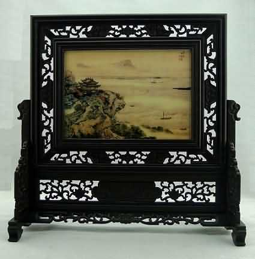
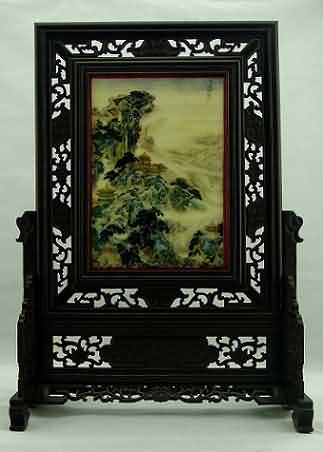
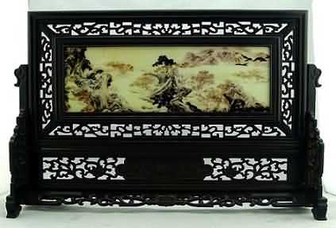
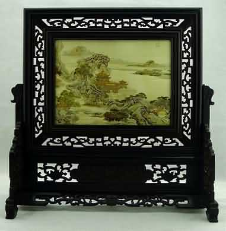
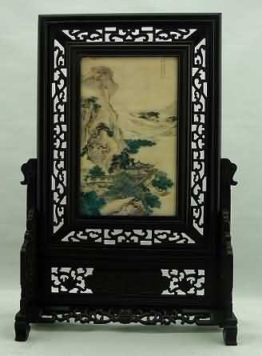

袁江，清代著名画家，字文涛，号岫泉。江都（今江苏扬州）人。雍正时，召入宫廷为祗侯。善界画，长于山水楼阁界画，精湛绚丽，收放自如，影响深远。是我国绘画史上有影响画家，宫廷画家，有清一代界画推为第一。
袁耀（生卒年未详），字昭道，江都（今江苏扬州）人。袁江之侄。工画山水、楼阁、界画。画风工整、华丽，与袁江相似。其精品有胜于袁江者。偶作花鸟，亦甚佳。
|  | |
| 观潮图（袁江） |
|
| 图中远山连绵起伏，近处江面辽阔，波涛汹涌，江上船只往来。岸边，树木浓密阴郁，楼阁台榭临江于山石之上。用笔工细，幽雅华丽，体现了袁江山水画和界画的风格。 |
|  |
|
| 蓬莱仙境图（袁耀) |
|
| 此图以神话传说为题材描绘蓬莱仙境，图中山石陡峭，奇形怪状，苍茫大海，波涛汹涌；山中树木葱郁，楼阁宫殿华丽壮观，是神仙异人之所在。 |
|  | |
| 桃源图(袁耀) |
|
| 此图描绘了东晋陶渊明所写的《桃花源记》的世外桃源。图中突兀的峰岳，如镜的湖水， 自在生活其间的人们， 无不令人心驰神往。境界幽美，起伏变化，虚实对比，动感性强。 |
|  |
|
| 九成宫(袁耀) |
|
| 九成宫原为隋之"仁寿宫"，唐贞观五年（631）加以扩建，更名"九成宫"，并置禁苑、武库及宫寺。"九成"之意："成"训"重"，"九"训"多"，"九成"形容多层，高峻。 |
|  | |
| 绿野堂图(袁耀) |
|
| 绿野堂是唐宪宗时宰相裴度的别墅名。裴度晚年辞官退居洛阳。于午桥建别墅，种花木万株，筑燠馆凉台，名曰"绿野堂"。裴度野服萧散，与白居易、 刘禹锡等作诗酒之会，穷昼夜相欢，不问人间事。 |
更多定制
|